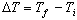
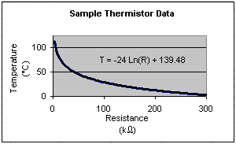

|
|

|
223 Physics Lab: Linear Thermal Expansion
|
223 & 224 Lab Overview |
Return to Physics 223 Labs
Purpose
The purpose of this lab experiment is to measure the linear expansion
coefficients of up to three different metals by observing how these materials
expand and contract with changes in temperature. In addition, we will
incorporate simple mathematical modeling techniques to fit curves to empirical data.
Background
When heat is added to most materials, the average amplitude of the atoms' vibration
within the material increases. This, in turn, increases the separation between the
atoms causing the material to expand. If the temperature change,
 ,
is such that the material does not go through a phase change, then it can be shown that
the change in the object's length,
,
is given by the equation ,
is such that the material does not go through a phase change, then it can be shown that
the change in the object's length,
,
is given by the equation
where
,
is the initial length of the object before heat is added, and
,
is the
linear expansion coefficient of the material. Accepted
values of several common
materials are given below in Table 1.
This effect, however, is not simply limited to materials whose temperature has
increased.
If energy is removed from the material then the object's temperature will
decrease
causing the object to contract. The temperature change,
,
from
Equation 1 is always found by subtracting the initial temperature of the object from
the final temperature, or
 .
Therefore, if
< 0,
will also be negative, indicating a length contraction.
From Equation 1, we see that
,
is not only dependent on
,
but also on the initial length of the object,
.
So, the longer the object, the greater
change in its length. Although the phenomena of linear thermal expansion can be
problematic when designing bridges, buildings, aircraft and spacecraft, it can be put to
beneficial uses. For instance, household thermostats and bi-metallic strips make use of
the property of linear expansion.
Table 1
|
Accepted Linear
Expansion Values of Common Materials
|
|
Material
|
a
(x10-5 °C-1)
|
|
Glass (ordinary)
|
0.09
|
|
Glass (Pyrex)
|
0.32
|
|
Concrete
|
1.20
|
|
Steel
|
1.24
|
|
Copper
|
1.76
|
|
Aluminum
|
2.34
|
|
Lead
|
2.90
|
In our experiment today we will use a thermistor to measure the
change in the rod's
temperature. A thermistor is a small, inexpensive electronic device, which is commonly
used to measure temperature. Since the thermistor is essentially a resistor made of a

semiconducting material, an increase in temperature rapidly decreases the
resistance of the device. Unfortunately the relationship between the thermistor's
temperature and resistance is not linear, but rather logarithmic, making it somewhat
inconvenient to use. The graph to the left shows this logarithmic behavior.
The temperature versus
resistance plot of a typical thermistor is given.
Notice that the equation that fits this
data is T = -24 Ln(R) + 139.48, where R is in kW.
N.B.: this is a plot of a typical thermistor
and does not represent the thermistor that you will be using today!
Objectives
- Determine the equation that
best fits the tabular data as shown on the PASCO Thermal Expansion apparatus.
- Determine the linear expansion coefficient of Aluminum, Copper, and/or Steel.
Equipment and setup
- (Figure 1.) Thermal expansion apparatus
- (Figure 2.) Thermistor
- (Figure 3.) Steam generator
- (Figure 4.) The meter sticks and vertical stands
are located in the window-well at the front of the classroom
- (Figure 5.) Two squirt bottles
- (Figure 6.) Funnel and holder
- (Figure 7.) Water runoff collection pan
- (Figure 8.) Dial caliper
- (Figure 9.) Digital multi-meter (DMM)
- (Figure 10.) Hand protectors
- Three metal rods (Al, Cu, and steel)
- Two riser blocks
- Banana wires
- Hose clamps
- Ice
- Hot water from sink
- Paper towels
|
[Click on images to enlarge.]
|
Hints and Cautions
- Caution!!! Rods may be very hot when using the steam generator!
Use the hand protectors to remove hot rods.
- Get your TA to check your steam generator between uses. If the water level
is not at the proper level, you will experience time consuming problems.
- Think before you start! You will be using a large amount of water throughout
this lab; make sure your setup allows the water to flow smoothly and that
you have a continuous supply of water available!
- You will be given a limited amount of ice. Your experiment should be
designed so that the ice lasts for the duration of that day's experiment.
-
Note that the thermistor takes longer to reach thermal
equilibrium than does the rod,
so you must allow a fair amount of time (1-2 minutes) for the temperature
measurement
to stabilize. Since the rod's length will reach a maximum deviation much more
quickly than the thermistor,
you should continually watch the dial caliper and the
ohmmeter, and record the maximum deviations shown by both devices at
whatever time they occur.
- The zero-mark on the dial caliper may be adjusted to mark the initial position
of the caliper needle. Take care to loosen the locking screw before
rotating the zero-mark.
- The steam generators take approximately 15 minutes to sufficiently heat the
water.
Online Assistance
- Adding a trendline
to an Excel plot
- Adding a non-linear
trendline to an Excel plot
- Create plots of two
data series on one graph
- Fitting multiple
curves (trendlines) to one data set
- Clemson Physics Lab Tutorials
- Measurement
uncertainties
- Using Excel
- Graphing data
using Excel
- Using error
bars in Excel
Lab Report Template
Each lab group should
download the Lab Report Template
and fill in the relevant information
as you perform the experiment. Each person in the group
should print-out the Questions section and answer them individually.
Since each lab group will turn in an electronic copy of the lab report,
be sure to rename the lab report template file. The naming convention is as
follows:
[Table Number][Short Experiment Name].doc.
For example the group at lab
table #5 working on the Ideal Gas Law experiment would rename their template file
as "5 Gas Law.doc".
Nudge Questions
These Nudge Questions are to
be answered by your group and checked by your TA as you do the lab. They
should be answered in your lab notebook.
Objective 1 Nudges
- Describe the method that you will use to determine the equation
that best fits the temperature/resistance data.
- Do you expect your trendline to be logarithmic,
linear, exponential, a power series, etc?
- Most commonly your data trendlines have been linear. How do you add a
trendline that is not linear?
- Does one trendline accurately fit the
temperature/resistance data?
If not, try breaking up the single data set into two.
We suggest breaking
up the data around 35°C and fitting two curves accordingly.
- What is(are) the equation(s) that best fit the temperature/resistance data?
- For what temperature
range(s) are the equation(s), found in the previous step, valid?
Objective 2 Nudges
- How will you measure the initial length of the rod,
?
- When will you measure the initial length of the rod?
- In this experiment, you should have at least 3 data points using cold water,
hot water, and steam. In what order will you proceed? Why?
- You have a limited supply of ice (about 0.5L for each day).
How do you ensure that this supply will last?
- What are your initial conditions? What, if anything, will you measure
before heating or cooling the metal rods?
- What exactly do you want the thermistor to measure during the experiment?
In reality, what will the thermistor actually measure? How will you
reduce any errors in the temperature measurement technique?
- Using the dial caliper, how can you determine if the rod is
contracting or expanding?
- What is the sign of DeltaL if the rod is contracting? Expanding?
- When, if ever, is it necessary to zero the dial caliper? When,if ever,
should you re-zero it?
- What is the least count of the dial caliper?
- What are the uncertainties in the length measurements?
?
- What are the uncertainties in the temperature measurement?
?
The person in charge of Error Analysis should think how to use the raw
data along with the data trendlines to quantify this uncertainty. Note
the uncertainty may be different for all temperatures.
- What parameters will you graph in order to measure the linear expansion
coefficient,
,
- Did your best-fit line fall within the data points' error bars?
- What is your value for
? What are the units for this
coefficient?
- How did your value of
,
compare to the accepted values?
Questions
These Questions are also found in the lab write-up template. They must be answered by
each individual of the group. This is not a team activity. Each person should
attach their own copy to the lab report just prior to handing in the lab to your
TA.
- How did the linear expansion coefficients for copper, aluminum and steel
compare? How can you interpret this?
- Using the thermistor calibration equations you found, what could be said about
the importance of an accurate thermistor reading when dealing with hot and
cold temperatures? In other words, in what temperature regime should the
experimenter make the most careful thermistor reading? Explain.
- Explain how linear expansion of metal rods can be used as a thermometer. What
would be some of the problems with this method?
- An aluminum baseball bat, which is 0.8950m in length when the temperature is
34.7°C, is left outside over night. If the temperature that night reaches
freezing, what would be the bat's new length?
- A slab of concrete used in highway construction is set in place when the ambient
temperature is 20.0°C. If its length at that time is 20.478m, calculate
the minimum gap required between concrete slabs if buckling is to be prevented.
Assume the maximum temperature that will be reached is 55°C.
- From your results, can you approximate the coefficient of volume expansion
for aluminum, copper, and steel? That is,
. Give your answer in terms of
.
TA Notes
- You may wish to assign each lab group only one metal rod with which
to experiment. It might be instructive to have two groups analyze copper,
two groups analyze steel and two analyze aluminum, and then have the
common groups compare results. This would make for some excellent
oral presentations.
- Students will have to be briefed on the use of the digital multi-meter.
Data, Results and Graphs
For this first experiment, it may be helpful for students to see a sample
data table. We have them for viewing as a
Word document or as a
PDF document.
Answers to Questions
Lab Manual
CUPOL Experiments
As of now, there are no
CUPOL experiments
associated with this experiment.
If you have a question or comment, send an e-mail to Lab Coordiantor:
Jerry Hester
223 & 224 Lab Overview |
Return to Physics 223 Labs
|
|